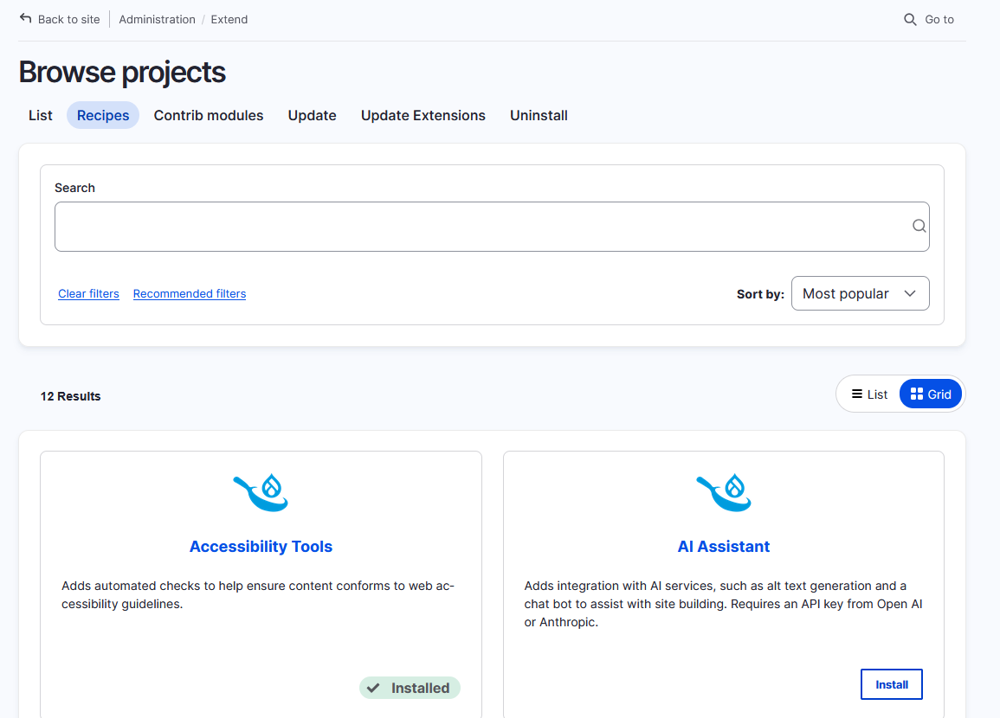
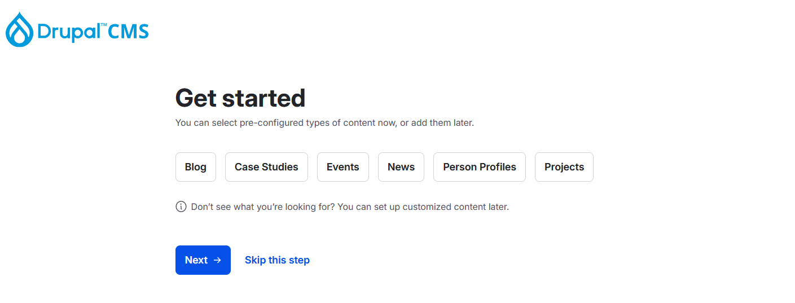

This is a honest assessment and comparison of the Recipe API based on my experience converting Paragraphs Demo and maintaining our distributions at MD Systems.
I know very well how hard it so build something new like this, it is not my intention to discredit any work done on this.
Essentially like a module, a recipe can provide any number of configuration entities.
Based on the format and API of the default_content project.
Any Content entity can be exported into a YAML format.
Use cases: Example content for distributions, Initial content for custom projects
Note: Exporter is not yet in core, use default_content drush commands
Making changes to existing configuration
Examples: Add components to form/view displays, enable content moderation, add to text formats
This is the replacement to hook_install() in modules
Recipes can define required input and use it within the Recipe
Example: The Google Analytics Drupal CMS recipe requires a Google Tag ID
Recipes are stored in a new top-level /recipes folder, typically outside of the web root
composer require drupal/drupal_cms_page
"installer-paths": {
...
"recipes/{$name}": ["type:drupal-recipe"],
},
Drupal core (must run this inside web root)
php core/scripts/drupal recipe ../recipes/drupal_cms_pageDrush 13 (works everywhere)
drush recipe ../recipes/drupal_cms_pageExperimental, Drupal Core Initative

{
"name": "drupal/drupal_cms_page",
"description": "Adds a content type for simple pages.",
"type": "drupal-recipe",
"license": ["GPL-2.0-or-later"],
"require": {
"drupal/core": ">=10.4",
"drupal/drupal_cms_content_type_base": "~1.0.2"
},
"version": "1.0.2"
}
# Human readable name & description
name: Basic page
description: Adds a content type for simple pages.
# Group/Package of the recipe
type: Drupal CMS
# Apply other recipes first
recipes:
- drupal_cms_content_type_base
# Install modules & themes
install:
- menu_link_content
config:
# Fail if config exists and does not match (default)
strict: true
# Do not fail if config exists and does not match
strict: false
# Only fail on specific config entities
strict:
- field.storage.body
config:
# By default, only simple config of modules is installed
import:
node:
- node.type.page
menu_link_content: *
config:
actions:
user.role.content_editor:
grantPermissions:
- 'create person content'
- 'delete person revisions'
- 'delete any person content'
- 'edit any person content'
workflows.workflow.basic_editorial:
addNodeTypes: ['person']
scheduler.settings:
simpleConfigUpdate:
hide_seconds: true
Just like modules, export and put the config in the config/ folder.
core.entity_form_display.node.page.default.yml
core.entity_view_display.node.page.card.yml
core.entity_view_display.node.page.default.yml
core.entity_view_display.node.page.teaser.yml
field.field.node.page.field_content.yml
field.field.node.page.layout_builder__layout.yml
node.type.page.yml
pathauto.pattern.page_content.yml
Reminder: Remove uuid and _core keys
Export with drush commands from the default_content project
$ composer require drupal/default_content
$ drush en default_content
$ drush dcer --folder=../recipes/my_recipe/content node 4
node/ce429bd2-2a91-48cf-9890-8b7bea56de52.yml
media/9f589217-c3bd-41eb-a0b5-7e8b6cd0e80b.yml
taxonomy_term/d48adeba-e388-4e82-820b-98bbd2f35a46.yml
file/DrupalCon-Barcelona-2024 - credit-Bram-Driesen.jpg
file/4bb02092-717b-44c8-9147-be3821c244c6.yml
Example drupal_cms_google_analytics
input:
property_id:
data_type: string
prompt:
method: ask
form:
'#type': textfield
actions:
google_tag.container.drupal:
set:
property_name: tag_container_ids
value:
- ${property_id}
ConfigAction Plugin or an attribute on a config entity method
#[ActionMethod(adminLabel: new TranslatableMarkup('Enable'))]
public function enable() { }
Allows to act when certain recipes are installed. Necessary when reacting to config entities or content.
(may contain personal opinions)
Drupal doesn't know if you've already applied a recipe or not.
That also applies to recipes it depends on. Every time a recipe is applied, all recipes it depends on are applied again.
In strict module, a recipe can only be enabled if the configuration it provides does not exist yet or is an exact match.
Currently enabled by default: drupal.org/i/3478699.
Reason: Config dependency conflicts, e.g. mismatching type between field and field storage
Open bug report against redirect module
Short term: disable strict mode or only use for field storages
Long term: Better config validation, fields should ensure the storage has a matching type
Long term alternative: Modules should only ship required/minimal config, use optional/recipes for opinionated/example configuration
Modules have an optional config folder, that is only installed if all dependencies are met. Recipes don't.
Use case: Multilingual, ship content settings if site is multilingual
Removing a module that a recipe no longer depends on will remove that from existing sites that might have it installed.
Solution: Drupal will expand recipe dependencies and add them directly to composer.json
A quick look under the hood
Development happens in drupal.org/project/drupal_cms
Gitlab CI Job then subtree-splits into dedicated drupal.org project for each recipe
Similar to Symfony project
Results in installable recipes that are put in /recipes folder
Might be supported for all projects in the future?
Recipes can not provide CSS/Templates
Adds some styling for specific provided recipes
Will be replaced with a dedicated Drupal CMS theme later
Idea: Standalone Single Directory Components (SDC)?
Currently limited to local recipes and locked down to specific Drupal CMS recipes.
Allow downloading recipes: #3413567
Paragraphs comes with a demo module that creates some example multilingual paragraph types, content and search integration.
Sole purpose is throwaway demo sites
Idea: Convert to multiple recipes that can be used as a starting point for real sites as well
A module can be installed through the UI with Drupal core
A recipe requires drush commands or project_browser (will be in core)
Recipes within a module are currently not really discoverable
Adopt Drupal CMS Subtree Split?
Would also require the demo module to be split
A recipe per paragraph type?
A single recipe for all?
Something in between?